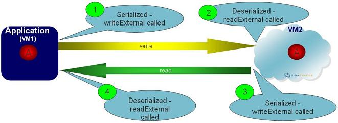

To solve the performance problems associated with class serialization, the serialization mechanism allows you to declare an embedded class is Externalizable. When the ObjectOutputStream writeObject() method is called, it performs the following sequence of actions:
Externalizable is an interface that consists of two methods:
public void readExternal(ObjectInput in);
public void writeExternal(ObjectOutput out);
The Externalization mechanism writes out the identity of the class (which boils down to the name of the class and the appropriate serialVersionUID). It also stores the superclass structure and all the information about the class hierarchy. But instead of visiting each superclass and using it to store some of the state information, it simply calls writeExternal() on the local class definition. The Externalization mechanism stores all the metadata, but writes out only the local instance information.
When a POJO class with embedded properties uses the Space API, you may implement the Externalizable mechanism for the embedded property. This can be done to control serialization and deserialization when the Object is sent to the space (e.g. write, update and execute Operations) and when it is sent back to the client (e.g. read and take operations). This will optimize the remote call when using Remote Space configuration for single, partitioned, and replicated space topologies.

Externalizable on a property with a storage type other than OBJECTExternalizable for the Space class itself is not supported.
Here is an example; the Person class has an Address property that is being externalized.
@SpaceClass
public class Person {
private Long id;
private String lastName;
private String firstName;
private Address address;
@SpaceId(autoGenerate=false)
public Long getId() {
return id;
}
public void setId(Long id) {
this.id = id;
}
public String getLastName() {
return lastName;
}
public void setLastName(String lastName) {
this.lastName = lastName;
}
public String getFirstName() {
return firstName;
}
public void setFirstName(String firstName) {
this.firstName = firstName;
}
public Address getAddress() {
return address;
}
public void setAddress(Address address) {
this.address = address;
}
}
public class Address implements Externalizable {
private String street;
private String city;
private String country;
public String getStreet() {
return street;
}
public void setStreet(String street) {
this.street = street;
}
public String getCity() {
return city;
}
public void setCity(String city) {
this.city = city;
}
public String getCountry() {
return country;
}
public void setCountry(String country) {
this.country = country;
}
@Override
public void readExternal(ObjectInput in) throws IOException,ClassNotFoundException {
street = (String) in.readObject();
city = (String) in.readObject();
country = (String) in.readObject();
}
@Override
public void writeExternal(ObjectOutput out) throws IOException {
out.writeObject(street);
out.writeObject(city);
out.writeObject(country);
}
}
Kryo is a fast and efficient object graph serialization framework for Java. You can use this framework to serialize your objects with writeExternal and readExternal methods of the Address class make use of the KryoSerializers.
package xap.kryo;
import java.io.Externalizable;
import java.io.IOException;
import java.io.ObjectInput;
import java.io.ObjectOutput;
import com.esotericsoftware.kryo.Kryo;
import com.esotericsoftware.kryo.io.Input;
import com.esotericsoftware.kryo.io.Output;
public class Address implements Externalizable {
private String street;
private String city;
private String country;
public String getStreet() {
return street;
}
public void setStreet(final String street) {
this.street = street;
}
public String getCity() {
return city;
}
public void setCity(final String city) {
this.city = city;
}
public String getCountry() {
return country;
}
public void setCountry(final String country) {
this.country = country;
}
@Override
public void writeExternal(final ObjectOutput stream) throws IOException {
KryoSerializers.serialize(stream, this::write);
}
@Override
public void readExternal(final ObjectInput stream) throws IOException, ClassNotFoundException {
KryoSerializers.deserialize(stream, this::read);
}
protected void write(final Kryo kryo, final Output output) {
output.writeString(street);
output.writeString(city);
output.writeString(country);
}
protected void read(final Kryo kryo, final Input input) {
street = input.readString();
city = input.readString();
country = input.readString();
}
}
package xap.kryo;
import java.io.ByteArrayOutputStream;
import java.io.IOException;
import java.io.ObjectInput;
import java.io.ObjectOutput;
import java.util.function.BiConsumer;
import com.esotericsoftware.kryo.Kryo;
import com.esotericsoftware.kryo.io.Input;
import com.esotericsoftware.kryo.io.Output;
public class KryoSerializers {
private static final ThreadLocal<Kryo> kryos = new ThreadLocal<Kryo>() {
protected Kryo initialValue() {
Kryo kryo = new Kryo();
kryo.register(Address.class);
return kryo;
};
};
public static void serialize(final ObjectOutput out, final BiConsumer<Kryo, Output> serialize) throws IOException {
Output output = null;
try {
Kryo kryo = kryos.get();
ByteArrayOutputStream byteOutStream = new ByteArrayOutputStream();
output = new Output(byteOutStream);
serialize.accept(kryo, output);
byte[] bytesToWrite = byteOutStream.toByteArray();
// write number of bytes that got written by kryo
out.writeInt(bytesToWrite.length);
out.write(bytesToWrite);
} finally {
if (output != null) {
output.close();
}
}
}
public static void deserialize(final ObjectInput in, final BiConsumer<Kryo, Input> deserialize) throws IOException {
Input input = null;
try {
Kryo kryo = kryos.get();
// see how many bytes were written and allocate according buffer
int bytesToRead = in.readInt();
byte[] buffer = new byte[bytesToRead];
in.read(buffer);
input = new Input(buffer);
deserialize.accept(kryo, input);
} finally {
if (input != null) {
input.close();
}
}
}
}
A complete example of kryo serialization is available here.